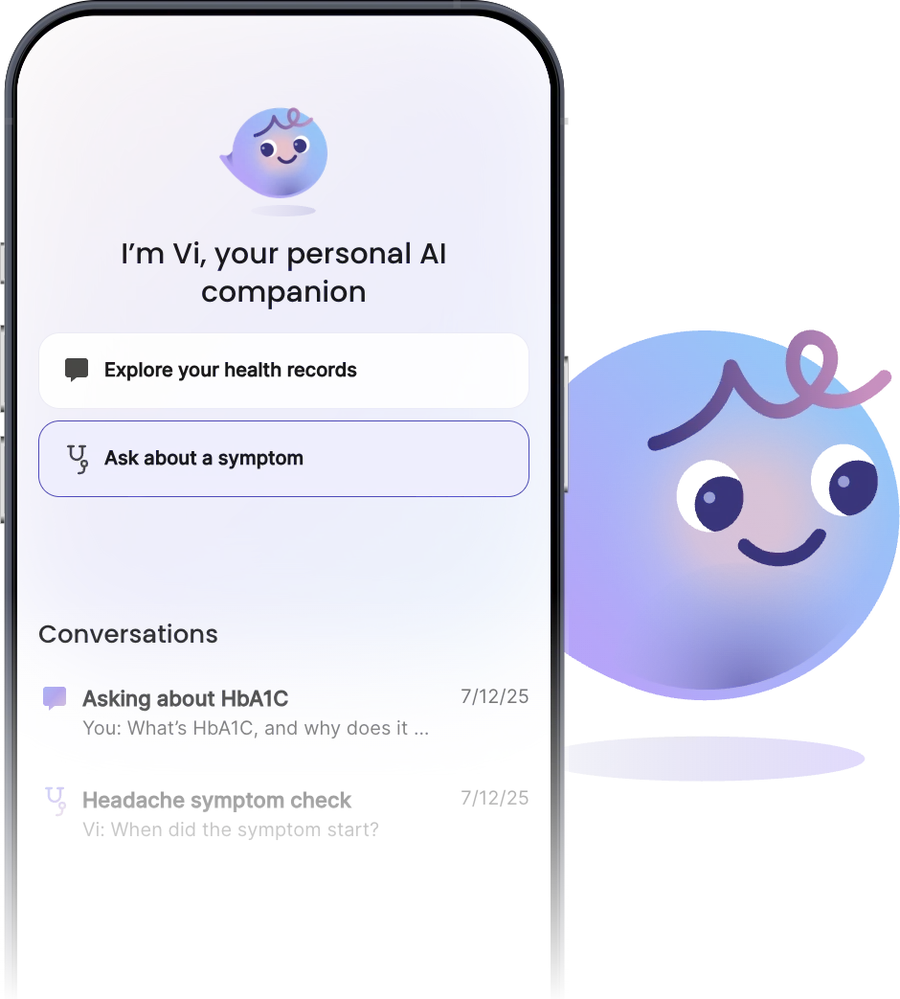

My mandate
Evidence to decide with
Decide which research mattered most, and give three functions an evidence-based way to define Vi’s character.
Case study · Vi, LLM health agent in Verily Me
Patients said their care team sounded like a chatbot. Vi, an LLM-based personal health agent for people managing type 2 diabetes, had to be more human than that, without overstepping what an agent should do. I led the foundational research that set its character.

Situation
The care team’s stated turnaround for a patient’s message
Response time was the pain point patients cited most in recurring CSAT surveys.
When replies arrived, patients described them as stilted and mechanical, like a chatbot.
The team planned Vi: grounded in each patient’s health data, and available 24/7 on their phone inside Verily Me.
Task
My mandate
Decide which research mattered most, and give three functions an evidence-based way to define Vi’s character.
Decision rights
Content strategy and UX design led. My job was to make their calls well informed and defensible to clinical.
Open risks
Misinformation, and keeping the care team aware of what Vi had told patients.
Approach
Literature review on what makes care relationships work.
20 patients and a card sort of real care tasks, over two weeks.
Synthesis of how patients described each job they’d give an agent.
An early Vi prototype, scored against the trait rubric.
Each study answered a question the one before it raised, and each produced an artifact a partner function could own.
01 · Evidence
| Quality | Looks like | Not |
|---|---|---|
| Warmth | Acknowledges effort before the task | Exclamation points and filler praise |
| Competence | Specific, grounded in the patient’s own data | Generic advice anyone could search for |
| Empathy | Names the daily burden of managing a condition | Scripted sympathy on routine tasks |
| Consistency | The same voice and boundaries every session | A personality that drifts with the prompt |
| Honesty about limits | Says what it can’t judge, then brings in the care team | Confident guesses on clinical questions |
Grounded in therapeutic-alliance research, which links bedside manner to satisfaction, trust and adherence. The same anchors became the rubric for scoring Vi in testing.
02 · Interviews · 20 patients, card sort
Information
Context decides
Judgment
What decided “it depends”: the stakes, whether Vi had the patient’s data, and whether their care team would see the exchange. Tasks shown are illustrative.
03 · Archetypes
Constant core
Refills, reminders, logging. Brief and reliable, with little ceremony.
Meals, activity, goals. Encourages without judging; persists without nagging.
Labs, trends, visit prep. Precise, explicit about what it can’t judge, quick to bring in the care team.
04 · Usability testing
Finding
Effusive empathy on routine tasks felt performative. Patients wanted brief.
Finding
Saying “I can’t answer that” and looping in the care team raised confidence.
Finding
Patients wanted proof the care team would see it, and when they’d hear back.
Routine task · Organizer
BeforeAmazing work staying on top of things! I’m so proud of you. Just a friendly reminder that your refill is due Friday!
AfterYour refill is due Friday. Want me to send the request to your pharmacy now?
Clinical question · Translator
My fasting reading was 182 this morning. Should I take an extra dose?
Changing a dose is a call for your care team, so I won’t guess. I’ve shared this reading with them. They’ll see our conversation and reply here.
Representative exchanges, redrawn.
Alignment
Designed against one character with three modes
Wrote and reviewed outputs against one shared standard
Became Vi’s scope-of-support boundary for clinical sign-off
Synthesis ran jointly with all three functions, rather than arriving as finished findings.
Result
The same population had named slow, robotic responses as its top pain point.
The team carried the archetypes, rubric and delegation map into later iterations after I moved on.
The split between information and judgment put clinical’s review on evidence, not general caution.
Character design became a process: evidence, behavioral spec, rubric, test.
Reflection
Next time I’d tie the trait rubric to behavioral measures from day one: return rate, task completion and adherence signals. That matters most for the next segment, patients with uncontrolled diabetes who don’t respond to care-team outreach.